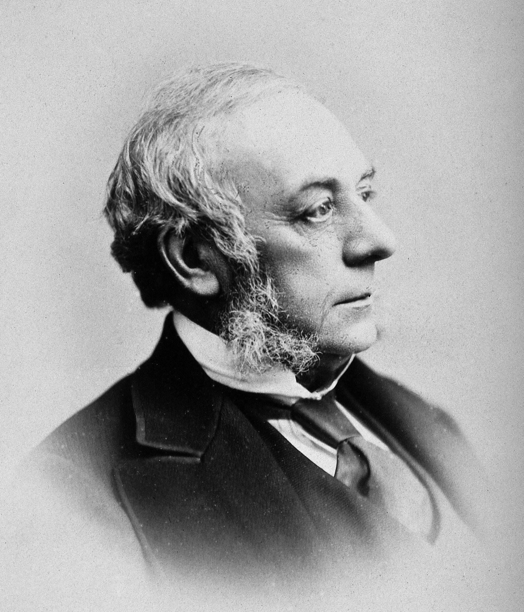
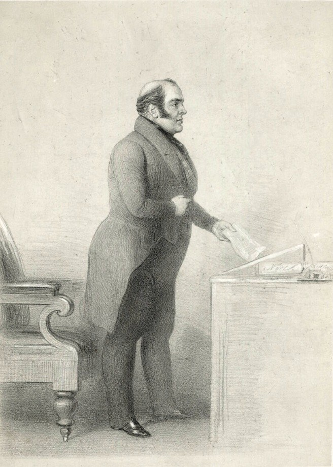
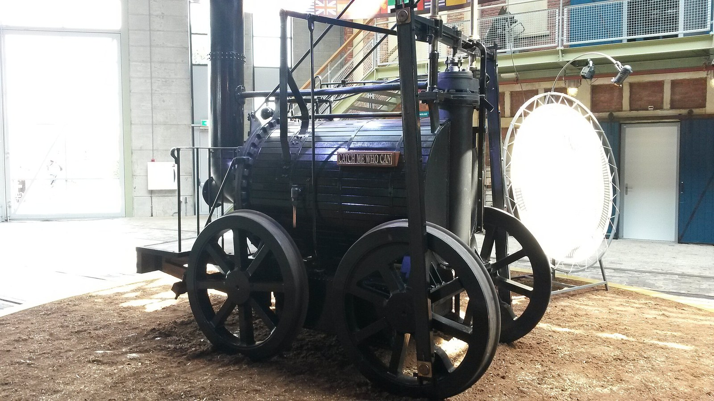
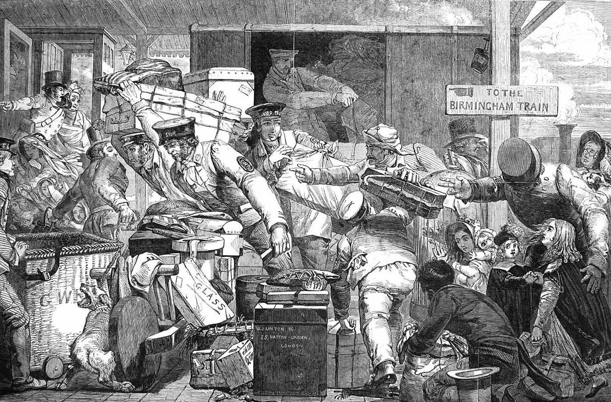
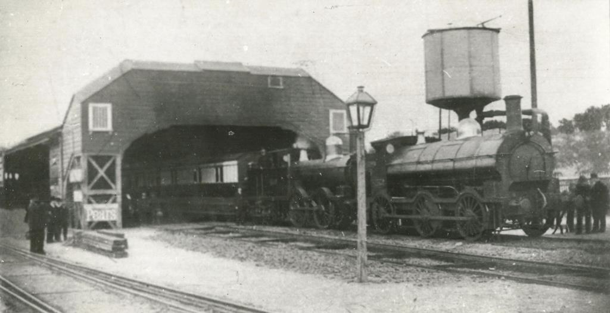
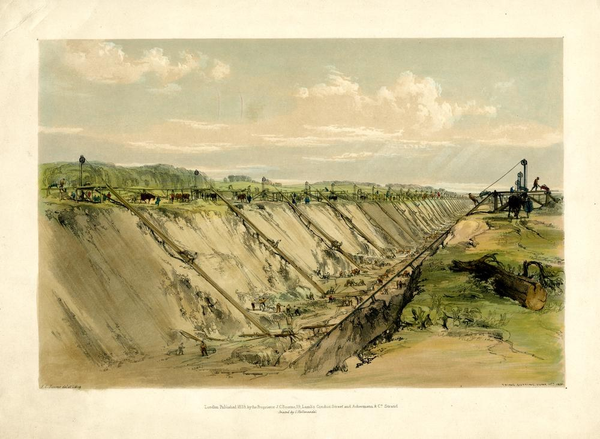

[문명의 궤도, 철도③] 철도가 미친 짓이라 믿었던 시대
1825년 『쿼털리 리뷰』 조롱과 법안 제1조 부결
1866년 「철도 척추」와 「열차 안 광인」 공포
1840년대 네비 25만명과 우드헤드 터널 참사
AI경제저널=김갑봉 기자 | 1825년 3월 영국 런던의 평론지 『쿼털리 리뷰』 31권 62호가 철도 책자 세 권을 묶어 서평을 실었다. 커밍과 실베스터, 샌더스가 낸 책이다. 서평자는 그 무렵 나온 다른 철도 계획도 끌어와 도마에 올렸다. 런던과 울리치를 시속 18~20마일, 약 29~32㎞로 잇겠다는 구상이었다.
서평자는 이렇게 비웃었다. "울리치 사람들이 그런 속도로 달리는 기계에 몸을 맡기기를 기대하느니, 차라리 그들이 콩그리브 도탄 로켓에 실려 발사되기를 기대하겠다." 짐이라면 혹 맡길지 모른다고도 했다.
서평은 운하 소유주들이 불평할 근거는 조금도 없다며 리버풀·맨체스터 철도 편을 들었다. 비웃은 것은 지나친 속도 약속과 주목할 가치도 없다고 본 허황한 나라 전체 철도망 구상이었다. 장사가 안 되는 운하의 주주라면 우월성이 드러날 쪽으로 지분을 옮기라고 권했다.
1825년 운하 회사의 소책자와 1844년 시브소프의 반대
반대는 말로만 끝나지 않았다. 리버풀·맨체스터 철도 추진 측이 1825년 회기에 법안을 내기로 하자 운하 회사들이 나섰다. 스티븐슨 부자의 전기를 쓴 새뮤얼 스마일스의 기록이 남아 있다. 운하 회사들은 소책자를 찍고 신문을 사서 철도를 헐뜯었다.
소책자와 신문에 실린 주장은 이랬다. 철도가 생기면 소가 풀을 못 뜯고 암탉이 알을 못 낳는다. 독한 연기에 새가 떨어져 죽고 길가 집이 불탄다. 보일러가 터진다.
두 달에 걸친 하원 위원회 공방 끝에 표결은 아슬아슬하게 갈렸다. 법안 전문은 37 대 36, 한 표 차로 넘었다. 철도 건설을 허용하는 제1조는 19 대 13으로 떨어졌다. 토지 수용 조항마저 부결되자 추진 측은 법안을 거둬들였다.
지주들도 철도를 막았다. 런던·버밍엄 철도 법안은 1832년 귀족 지주들 반대로 상원에서 막혔다. 회사는 힘 있는 지주들과 협상을 열었다. 스마일스는 1833년 법안이 거의 반대 없이 통과됐다고 적었다.
그레이트웨스턴 철도 법안은 1835년 국왕 재가를 받았다. 그 전까지 이튼 칼리지가 거세게 반대했고 지주들은 땅을 잃을까 걱정했다. 승객이 소음에 귀가 먹거나 질식하고 소가 미친다는 말이 돌았다. 템스강 물이 마르고 윈저성 물 공급이 위협받는다는 말까지 나왔다.
반대는 그 뒤에도 이어졌다. 1844년 2월 5일 하원에서 링컨 선거구 의원 찰스 시브소프 대령이 일어섰다. 그는 어떤 철도든 모든 제안에 늘 반대해 왔다고 말했다. 생각을 바꿀 까닭도 없다고 했다.
1862년 『랜싯』 조사와 1866년 「철도 척추」
1862년 1월 4일 의학지 『랜싯』이 철도 여행과 건강을 다룬 조사위원회 보고를 싣기 시작했다. 여러 차례 이어진 보고는 같은 해 책으로 묶였다. 위원회는 철도를 「섭리를 시험하는 사악한 짓」으로 본 초기 반대론부터 돌아봤다.
시속 20마일, 약 32㎞는 호흡에 위험하다는 경고도 있었다. 긴 터널에서는 탄산가스에 질식한다고 했다. 보고서에는 킹스칼리지병원 여성·아동 질환 담당 의사 메도스가 모은 철도 여행 뒤 유산·출혈 사례도 실렸다.
같은 보고서에서 산과의 그레일리 휴잇은 결이 다른 의견을 냈다. 철도 덕분에 먼 길을 가는 임신부의 유산 위험이 예전보다 훨씬 줄었다고 적었다. 긴 여행은 위험이 없지 않다고 덧붙였다.
1866년 런던 유니버시티칼리지병원 외과의 존 에릭 에릭슨이 그해 봄 강의를 묶어 책을 냈다. 『철도와 그 밖의 사고가 신경계에 남기는 손상에 관하여』다. 서문 날짜는 6월 15일이다.
에릭슨은 철도 여행 자체가 아니라 철도 사고로 다친 사람을 다뤘다. 그는 근래 퍼진 「철도 척추」라는 이름을 「터무니없는 이름」이라 불렀다(railway spine).
같은 증상은 철도 이전 사고에서도 기록됐다며 「척추 진탕」이라는 말을 썼다. 철도 사고가 특히 무거운 까닭도 꼽았다. 빠른 속도와 몸의 관성, 갑작스러운 멈춤이다. 손쓸 수 없는 처지와 놀란 마음도 꼽았다.

철도 사고와 신경 손상을 다룬 책은 잇따랐다. 같은 해 윌리엄 캠프스가 하비협회 발표문을 18쪽짜리 소책자로 냈다. 1869년 토머스 와튼 존스는 철도 사고 뒤 시력을 잃은 사례를 다룬 책을 냈다.
1883년 반론이 나왔다. 런던·노스웨스턴 철도회사 외과의 허버트 페이지가 『뚜렷한 기계적 손상 없는 척추·척수 손상과 신경 충격』을 냈다. 몸에 손상이 보이지 않는 환자는 마음에서 온 증상이라고 봤다.
의식했든 아니든 부풀린 증상은 보상이 매듭지어지면 사라진다는 생각은 두 사람이 같았다. 필립 개스코인은 2020년 논문에서 이 논쟁을 뇌진탕 증상에 대한 보상이 시작된 계기로 봤다.
역사학자 랠프 해링턴은 2003년 논문에서 다른 해석을 비판했다. 철도 척추를 현대 정신역동 의학의 기원으로 곧장 잇는 해석이다. 그는 결과에서 거슬러 올라간 읽기라고 봤다.
1860년대에는 객실 안 「광인」 공포가 번졌다. 신문과 잡지는 평범한 남자가 열차 안에서 미쳐 버렸다는 기사를 되풀이해 실었다. 역사학자 밀른스미스는 2016년 논문에서 이를 언론이 위험을 부풀린 「도덕적 공황」으로 봤다.
1845~1849년 철도주 64% 폭락과 철도왕 허드슨
1840년대에는 철도에 투기 열풍이 불었다. 미국 수학자 앤드루 오들리즈코가 셈한 1847년 철도 투자는 4400만파운드였다. 국내총생산 6억파운드의 7.3%다. 그는 그해 영국 정부 예산이 5000만파운드쯤이었다고 견줬다.
철도주 지수는 1845년 여름 167.9에서 1849년 말 60.5로 64% 떨어졌다. 소설가 샬럿 브론테도 철도에 넣은 돈을 크게 잃었다. 그는 편지에 「근래의 이 기묘한 철도 체제 때문에 아주 많은 이가 끼니마저 거의 잃었다」고 적었다.
오들리즈코는 이 투기가 주주에게는 재앙이었지만 영국에 넓고 효율적인 철도망을 남겼다고 봤다. 파산한 노선은 거의 없었고 대부분 계속 달렸다. 그는 경제 규모에 견주면 철도 투기가 인터넷 거품보다 훨씬 컸다고도 셈했다.
투기의 얼굴은 요크 근처 하우샴 출신 조지 허드슨이었다. 1844년 1016마일, 약 1635㎞의 철도가 대부분 그의 손에 있었다. 1845년 선덜랜드 하원의원이 됐다. 1849년 2월 28일부터 5월 17일까지 부정이 드러나며 회장직을 잇따라 내놨다.
1849년 뒤 그는 주로 해외에서 지냈다. 1865년 7월 법정모독으로 요크성에 갇혔다가 10월 풀려났다. 1868년 옛 친구들이 4800파운드를 모아 연금을 사 줬다. 1871년 12월 14일 런던 집에서 숨졌다.

1808년 캐치 미 후 캔과 1831년 베스트 프렌드 폭발
리처드 트레비식은 1804년 웨일스 페니다렌에서 증기기관차를 달리게 했다. 그도 대중의 눈을 끌려 했다. 1808년 7~8월 지금 런던 유스턴 광장 자리에 원형 궤도를 깔았다. 1실링을 받고 기관차 「캐치 미 후 캔」에 사람을 태웠다(Catch Me Who Can).
레일이 부러져 기관차가 넘어졌다. 돈벌이는 실패했다. 트레비식은 1816년 페루 광산으로 떠났다. 1827년 8월 콜롬비아 카르타헤나에서 로버트 스티븐슨을 만난 뒤 귀국했다.
1833년 4월 22일 다트퍼드 여관에서 빚을 진 채 숨졌다. 공장 노동자들이 돈을 모아 장례를 치렀고 묘비 없이 묻혔다.

대서양 건너 미국도 철도를 시험했다. 1830년 8월 28일 피터 쿠퍼가 만든 작은 기관차가 볼티모어·오하이오 철도 이사들을 태우고 엘리콧밀스까지 갔다. 나중에 톰 썸이라 불린 이 기관차는 시속 10~14마일, 약 16~23㎞로 달렸다.
말과 경주해 벨트가 빠지는 바람에 졌다는 이야기가 전한다. 미국 국립철도역사혁신박물관은 이 경주를 「전설」로 소개한다. 문서로 확인된 적은 없다는 설명이다.
미국에서 처음 공공 운행용으로 만든 기관차는 베스트 프렌드 오브 찰스턴이다. 뉴욕 웨스트포인트 주조소가 만들었다. 1830년 성탄절 찰스턴에서 첫 공식 운행을 했다.
1831년 6월 노예 화부가 안전밸브를 막았고 보일러가 터졌다. 화부가 숨지고 기관사가 화상을 입었다. 기관차는 다시 만들어져 피닉스라는 새 이름을 얻었다.
1846년 글로스터 궤간 소동과 1892년 광궤의 끝
궤간도 다툼거리였다. 이점바드 킹덤 브루넬은 그레이트웨스턴 철도에 7피트 4분의1인치, 곧 2140㎜ 광궤를 깔았다. 표준궤 1435㎜보다 70㎝ 넘게 넓다. 광궤와 표준궤가 만나는 글로스터역에서는 짐을 모두 옮겨 실어야 했다.

1891년 8월 회사가 광궤를 모두 없애겠다고 밝혔다. 『타임스』는 광궤를 「웅대한 구상」이라 부르면서도 「실제로나 장사로나 실패」라고 논평했다.
1892년 5월 20일 마지막 광궤 열차가 달렸다. 이어진 주말 이틀 동안 노동자 4200~4700명이 선로를 표준궤로 바꿨다. 바꾼 구간은 171~177마일, 약 275~285㎞였다.
비용은 80만파운드쯤으로 2021년 가치로 1억800만파운드다. 표준궤로 바꿀 수 있는 기관차는 그레이트웨스턴 111대, 사우스데번 21대였다.

1840년대 네비 25만명, 우드헤드 터널 참사
철도를 실제로 놓은 사람은 네비였다. 운하를 파던 노동자를 부르던 말 내비게이터에서 왔다(navvy, navigator).
1850년까지 노동자 25만명이 영국 철도를 놓았다. 영국 국립철도박물관은 육군과 해군을 합친 것보다 많았다고 적는다. 오들리즈코는 1847년 철도 건설 인력을 25만명으로 잡고 크림전쟁 때 영국 육군 규모와 같다고 견줬다. 같은 해 이미 놓인 노선의 운영 인력은 5만명이었다.
스마일스는 리버풀 쪽 노선 노동자 가운데 많은 이가 아일랜드인이었다고 적었다. 노섬벌랜드·더럼 철도에서 일하던 이도 있었다. 솜씨가 뛰어난 이들은 링컨·케임브리지 습지에서 땅을 파고 둑을 쌓던 사람들이었다. 네비들은 곡괭이와 삽, 화약으로 산을 깎고 터널을 뚫었다.

맨체스터와 셰필드를 잇는 우드헤드 첫 터널은 1839~1845년에 뚫렸다. 더비셔주 역사환경기록은 그 공사에서 22명이 숨지고 140명이 다쳤다고 적는다. 1852년에 끝난 둘째 터널 공사에서는 주로 1849년 콜레라로 28명이 더 숨졌다.
국립철도박물관은 1839~1852년 우드헤드 터널 공사의 사망률이 워털루 전투 병사보다 높았다고 적는다. 공사장의 열악한 생활·작업 환경은 1846년 하원 특별위원회 구성으로 이어졌다. 1847년 12월 13일 하원 토론에서 스태퍼드 의원이 위원회 증언을 옮겼다.
롤린슨은 자신이 본 공사장 품삯이 하루 3실링 6펜스~4실링이었다고 증언했다. 노동자들이 들뜨고 무법하게 사는 탓에 그 돈은 조용히 분별 있게 살며 받는 2실링 6펜스와 다를 바 없었다고 했다. 윌슨 목사는 일부 구간에서 맥줏값을 품삯에서 강제로 떼 갔다고 했다.
사회개혁가 에드윈 채드윅은 공사 한 건을 맡은 도급업자 몇몇의 이야기를 증언했다. 노동자보다 형편이 크게 낫지 않은 이들이었다. 그가 들은 바로는 이들이 공사로는 손해를 보면서도 맥주와 질 낮은 식료품 현물 지급으로 7000파운드 넘게 벌 판이었다.
셰필드·맨체스터 철도 외과의 폼프렛은 사고 한 건을 증언했다. 쇠 다짐봉이 화약에 불을 붙였다. 튀어 나간 다짐봉이 동료 머리를 꿰뚫어 그 자리에서 숨지게 했다.
폼프렛은 구리 다짐봉을 쓰자고 건의했다. 돌아온 답은 도급업자도 기술자도 아닌 그가 나설 일이 아니라는 말이었다.
철도 건설업자 토머스 브래시는 측량사 도제로 출발했다. 1834년 그랜드정크션 철도 고가교 공사를 따냈고 프랑스 파리~루앙, 스페인, 아르헨티나 철도를 놓았다.
협력자들과 함께 한때 8만명을 부렸다. 1870년 12월 8일 숨졌다. 같은 이름의 아들이 1868~1886년 헤이스팅스 하원의원을 지냈고 1911년 백작이 됐다.
1851년 만국박람회 604만명, 철도가 실어 나른 관람객
1851년 런던 만국박람회 관람객은 603만9195명이었다. 로열앨버트홀 뒤 만국박람회 기념비에 새긴 수다.
영국 개방대학 레이는 1987년 철학석사 논문에서 철도 승객을 셈했다. 1851년 승객은 해마다 늘던 증가분을 빼고도 400만명쯤 더 많았다. 그 대다수가 박람회 관람객이었다는 근거가 있다고 봤다. 레이는 이만한 인구 이동이 철도 없이는 불가능했다고 결론지었다.
1825년 서평자는 울리치 사람들이 그런 기계에 몸을 맡기지 않으리라 봤다. 26년 뒤인 1851년에는 평소보다 400만명쯤 많은 승객이 기차를 탔다. 대다수가 박람회 관람객이었다.
참고문헌
- Harrington, R.(2003), "On the tracks of trauma: railway spine reconsidered", Social History of Medicine 16(2), DOI 10.1093/shm/16.2.209
- Gasquoine, P. G.(2020), "Railway spine: The advent of compensation for concussive symptoms", Journal of the History of the Neurosciences 29(2), DOI 10.1080/0964704X.2019.1711350
- Milne-Smith, A.(2016), "Shattered Minds: Madmen on the Railways, 1860–80", Journal of Victorian Culture 21(1), https://doi.org/10.1080/13555502.2015.1118851
- Odlyzko, A.(2010), "Collective hallucinations and inefficient markets: The British Railway Mania of the 1840s", SSRN, https://www-users.cse.umn.edu/~odlyzko/doc/hallucinations.pdf
- Odlyzko, A.(2012), "The Railway Mania: Fraud, disappointed expectations, and the modern economy", Journal of the Railway & Canal Historical Society 215, https://www-users.cse.umn.edu/%7Eodlyzko/doc/mania06.pdf
- Rae, A. B.(1987), Visitors by railway to the Great Exhibition of 1851, 영국 개방대학 철학석사 논문, https://oro.open.ac.uk/63778/
- 영국 하원 의사록, "Railways Bill", 1847년 12월 13일, https://api.parliament.uk/historic-hansard/commons/1847/dec/13/railways-bill
- 영국 하원 의사록, "Railways", 1844년 2월 5일, https://api.parliament.uk/historic-hansard/commons/1844/feb/05/railways
- National Railway Museum, "Navvies: the workers who built the railways", 2018년 5월 16일, https://www.railwaymuseum.org.uk/objects-and-stories/navvies-workers-who-built-railways
- Derbyshire Historic Environment Record, "MDR8576 - Woodhead Railway Tunnel", https://her.derbyshire.gov.uk/Monument/MDR8576
- National Museum of Railroad History & Innovation, "Tom Thumb", https://nationalrailroad.org/collection/tom-thumb/
- Poole, W. S., "Best Friend of Charleston", South Carolina Encyclopedia, https://www.scencyclopedia.org/sce/entries/best-friend-of-charleston/
- "Canals and Rail-Roads", The Quarterly Review 31(62), 1825년 3월, https://archive.org/stream/sim_quarterly-review-1809_december-1824-march-1825_31/sim_quarterly-review-1809_december-1824-march-1825_31_djvu.txt
- The Lancet Commission(1862), The Influence of Railway Travelling on Public Health, https://archive.org/stream/influenceofrailw00lond/influenceofrailw00lond_djvu.txt
- Erichsen, J. E.(1866), On Railway and Other Injuries of the Nervous System, https://archive.org/stream/b21289451/b21289451_djvu.txt
- Smiles, S.(1868), The Life of George Stephenson and of his son Robert Stephenson, https://www.gutenberg.org/cache/epub/46229/pg46229.txt
- Illustrated London News 8(214), 1846년 6월 6일, https://archive.org/details/sim_illustrated-london-news_1846-06-06_8_214
- Broad Gauge Society, "Gauge conversion", https://www.broadgauge.org.uk/history/pops/bg_pic_gauge_conversion.htm
- Royal Commission for the Exhibition of 1851, 안내 책자, https://royalcommission1851.org/uploads/publications/1851_brochure_v15_text_issuuv2-2.pdf
[사진 출처]
- [사진1] G. Jerrard(1881), 웰컴컬렉션 소장, 퍼블릭 도메인 마크, https://wellcomecollection.org/works/hkz4fpw7
- [사진2] 작자 미상(1845년 석판화), 국립초상화미술관 NPG D36365, 위키미디어 공용, 퍼블릭 도메인, https://commons.wikimedia.org/wiki/File:George_Hudson_(2).png
- [사진3] Maurits90(2014), 위키미디어 공용, CC0, https://commons.wikimedia.org/wiki/File:Catch_Me_Who_Can_Nederlands_Spoorwegmuseum.jpg
- [사진4] 『Illustrated London News』 1846년 6월 6일, 위키미디어 공용, 퍼블릭 도메인, https://commons.wikimedia.org/wiki/File:Break_of_gauge_GWR_Gloucester.jpg
- [사진5] 작자 미상(1892), 위키미디어 공용, 퍼블릭 도메인, https://commons.wikimedia.org/wiki/File:Truro_last_broad_gauge_service_20_May_1892_(1256_and_3557)_20-05-1892.jpg
- [사진6] John Cooke Bourne(1839), 대영박물관 소장, 위키미디어 공용, 퍼블릭 도메인, https://commons.wikimedia.org/wiki/File:Tring_cutting_(BM_1956,0717.17).jpg